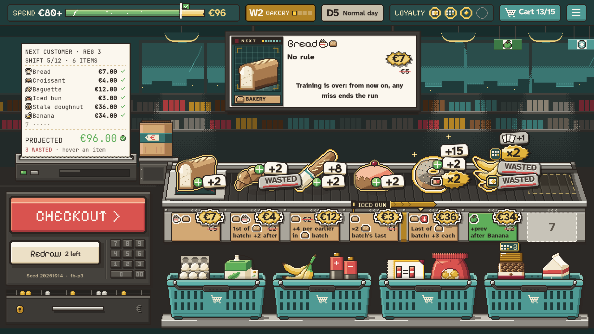

Bakery batches, readable
#128 · round 3. Last round's verdict: a strip can work if it is clearer, and the job words (OPENS, FILLS, GLAZES…) were too much. So the batch now reads as one joined strip of tickets, with no job words: the tickets' own lines say what each card does. A card out of place shows on its BATCH chip, in tomato with a cross, before checkout. Three strip takes, with Channel and Bracket from earlier rounds kept for comparison. Drawn over two real captures of the build; hover a BATCH chip.

BATCH, the keyword
Every Bakery job card prints BATCH as a chip where the sticker used to say "of Bakery batch". Hovering it opens the keyword's line, the same tooltip as a family glyph's, and lights the batch it belongs to. The monitor's NEXT line prints the same chip. Kept in every variant.
The batch while planning
- Each batch that holds a Bakery job card is drawn as one strip; a run of only Bread stays plain.
- No job words: the strip shows where the batch starts and ends, and each ticket's line already says where its card works.
- A card out of place turns its BATCH chip tomato with a pixel cross; hovering it gives the same reason as its WASTED step.
- Hovering any other BATCH chip lights the strip. Planning only: the count-up stays as it is.
New sticker lines
- Croissant: BATCH 1st: +2 to the rest
- Baguette: BATCH +4 per earlier
- Iced bun: BATCH ×2 the last
- Stale doughnut: BATCH last: +3 each
- Birthday candles: +3 each, next BATCH of 3+